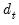
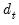

Seasonal adjustment procedures are only available in workfiles of the frequency they support. To seasonally adjust a series, click on Proc/Seasonal Adjustment in the series window toolbar and select the adjustment method from the submenu entries (JDemetra+, Census X-13, Census X-12, Tramo/Seats, MovReg, DSA Daily Seasonal Adjustment, STL Decomposition, or Moving Average Methods).
To perform JDemetra+ seasonal adjustment in EViews, click on Proc/Seasonal Adjustment/JDemetra+... from the series window menu in a monthly or quarterly workfile. This will open the JDemetra+ tabbed dialog:
The first tab, Base specification allows you to choose one of the JDemetra+ preset specifications, as well as selecting which series to output into the workfile, and optionally specifying a suffix to be used in naming the output series.
|
•
|
The X-13 spec: drop down menu specifies the preset specification. JDemetra+ offers a number of specifications with settings for the pre-treatment and decomposition steps of the seasonal adjustment:
|
|
•
|
The Mode: dropdown specifies the X-11 decomposition mode that will be used. JDemetra+ only allows the user to specify the decomposition mode if no pre-adjustment is being performed, so this dropdown is only enabled when the X-11 default specification is selected.
|
|
•
|
The Series output section specifies which of the output series from JDemetra+ will be exported to the workfile. By default, each output series will be created a name equal to that of the underlying series plus the type of series being created ( e.g., if JDemetra+ is run on the series GDP, then the seasonally adjusted D11 series will be created with a name of GDP_D11). You can use the Naming suffix edit field to enter an additional suffix that will be appended to the series name before the output type ( e.g., if you enter “_JD” as the Naming suffix then the D11 series for GDP will be created with a name of GDP_JD_D11).
|
The Regression tab of the dialog allows you to override some of the options set by the default specifications relating to the pre-adjustment regression step of X-13 style seasonal adjustment.
Selecting the X-13 specification on the Base specification tab will change the settings on this tab, but you can fine tune the default settings by using the options on this tab.
|
•
|
The Transformation drop down menu specifies whether a log transformation should be applied to the underlying series before running the regression. Auto (Log/none) instructs JDemetra+ to automatically detect whether a log transform should be applied or not.
|
|
•
|
The Check for outliers check box specifies whether JDemetra+ should automatically detect outliers. EViews' implementation of JDemetra+ supports only the Additive Outlier (AO), Level Shift (LS), and Temporary Change (TC) types of outliers, and when the option is checked, JDemetra+ will detect for all three types simultaneously.
|
|
•
|
Trading days sets the type of calendar effects used in the pre-adjustment regression. These effects consist of created variables with the count of the number of days in each period compared to the number of reference days. The options are:
|
If User variables is selected as the trading day type, you must specify series to use as calendar variables on the
User Regressors tab.
|
•
|
The Test: dropdowns specify whether JDemetra+ should test for the inclusion of trading day or Easter effects. Selecting Remove tells JDemetra+ to include the effects, but test for removal. Add tells JDemetra+ to not include the effects by default, but test to include. None tells JDemetra+ to always include the effects.
|
|
•
|
The Include Leap Year adjustment and Include Easter checkboxes control whether additional adjustments are made to the calendar effects for the impact of leap years and Easter. The Auto-adjust checkbox specifies whether JDemetra will automatically determine whether to drop the leap-year adjustment.
|
The ARIMA tab provides options for the estimation of the ARIMA model in the pre-adjustment step:
|
•
|
The ARIMA Method section selects the method used to specify the ARIMA model to be estimated. None instructs JDemetra+ to not estimate an ARIMA model at all.
|
If Manual is selected, you can enter a specific ARIMA order in (
p, d, q)(
P, D, Q) notation, where
p is the AR order,
d is the differencing level,
q is the MA order,
P is the seasonal AR order,
D is the seasonal differencing level, and
Q is the seasonal MA order.
If X-11 Auto is selected, JDemetra+ will use its default X-11 selection routine to select the most appropriate ARIMA order.
|
•
|
The Forecast ARIMA model checkbox instructs JDemetra+ to forecast the ARIMA model beyond the end of the series. The number of periods forecasted can be changed using the Forecast length edit field. Forecasting the ARIMA model allows JDemetra+ to provide forecasts of the final seasonally adjusted series and seasonal factors. Note forecasts will only be imported into EViews if the workfile range covers the period of the forecast.
|
The User Regressors tab of the dialog supports providing user-provided exogenous series to the pre-adjustment ARIMA/regression models.
Clicking on the Add button brings up a dialog asking you to type in the name of the workfile variable that you would like to include as a regressor:
The drop down menu should be used to specify a regressor type for the variable you are including (
i.e., , , , etc.). Changing the type of the regressors changes the exact impact that series has on the final seasonal adjustment calculation. The JDemetra+ documentation has details on the exact calculations.
If you selected User Variables as the
Trading Days type, you must add at least one user-regressor with a type of
Calendar/TradingDay.
Simple X-11 adjustment is one of the pre-set JDemetra+ defaults, so we change the X-13 spec: dropdown to
X-11. We'll elect to store the seasonally adjusted values in the workfile, and enter “_x11” in the edit field:
Clicking to display the JDemetra+ graph output:
The remainder of this section offers a brief description of the EViews interactive interface to X-13ARIMA-SEATS. EViews provides a general command interface that also supports X-13 features not available via the dialogs (see
Series::x13).
To perform X-13 seasonal adjustment, select from the series window menu in a quarterly or monthly workfile. EViews will open a tree structured dialog containing branches for setting options for variables, ARIMA estimation and forecasting, seasonal adjustment, and output.
The X-13ARIMA-SEATS procedure allows you to perform ARIMA regression prior to the seasonal adjustment step. The first branch of the X-13 dialog includes options for defining the source series and exogenous variables used in the ARIMA step.
The Transform settings allow you to transform the source series and regressors before fitting the ARIMA model.
When you click on the entry you will be prompted to choose a transformation method. You may choose between no transformation (), or a natural log (), Box-Cox (), logistic (), or automatically selected () transformation.
The Auto option chooses between no transformation and a log transformation based on the Akaike information criterion. The
Logit option transforms the series

to

and is defined only for series with values that are strictly between 0 and 1. For the
Box-Cox option, you must provide the parameter value

for the transformation:
for . See “Transform” (Section 7.18) of the X-13ARIMA-SEATS Reference Manual for further details.
The X-13 built in regressors page lets you specify any of the X-13 built-in regressors for the ARIMA regression model:
As you make selections or add variables, the X-13 Specification box will display the corresponding X-13 text specification. You may manually add, edit, or remove entries in this box and the dialog settings will change to reflect your entries, where relevant. For more details on the built-in variable types, see the “Variables” part of Section 7.13 (“Regression”), and Table 7.27 of the
X-13ARIMA-SEATS Reference Manual.
The User-defined regressors page allows non-X-13 built-in variables to be used as regressors in the ARIMA model:
Clicking on the Add button brings up a dialog asking you to type in the name of the workfile variable that you would like to include as a regressor:
The dropdown menu should be used to specify a regressor type for the variable you are including (
i.e., , , , ). Knowledge of the variable type may be used in internal calculations. Note that you may define up to five different holiday types and you may include multiple variables of a given holiday type. If your regressor variable does not fit in any of the specific categories, you should designate it as .
For additional details on the elements of the User-defined regressors page, see Section 7.13 of the
X-13ARIMA-SEATS Reference Manual, notably the entries for “user”, “usertype”, “aictest” and “chi2test”.
The Automatic outliers entry allows specification of automatic outlier detection routines.
The controls in the Outlier types box may be used to select which type of outliers to detect, and the range of dates over which to detect them.
The Selection procedure box lets you specify the method used to select outliers ( or and associated critical values against which the absolute
t-statistics for the tests will be compared. You may enter a single critical value to apply to all of the outlier types, or a list of critical values, one for each type. The default settings, which are outlined in Table 7.22 of the
X-13ARIMA-SEATS Reference Manual, vary with the number of observations.
Details of the outlier types and the selection procedures can be found in Section 7.11 of the X-13ARIMA-SEATS Reference Manual. The “DETAILS” section has a detailed description of the two different selection methods, “addone” (
One at a time) and “addall” (
All at once).
The ARIMA options branch is used to specify the ARIMA portion of the model, and to as provide access to basic estimation and forecasting options.
|
•
|
The default setting, None, tells X-13 not to include an ARIMA specification. (Note that SEATS seasonal adjustment requires an ARIMA specification, so you may not select None setting if you wish to use SEATS.)
|
|
•
|
If you select , , or , the dialog will change to show you the settings corresponding to your choice. We discuss each of these methods in turn.
|
If you select Manual as the ARIMA method, you will be prompted to specify the exact ARIMA specification in “(p, d, q) (P, D, Q)” format, where the “(p, d, q)” are the standard ARIMA components (for the AR, differencing and MA orders, respectively) and the “(P, D, Q)” are the seasonal ARIMA components at the workfile frequency.:
The first edit field, labeled , should be used to enter the text specification of the model, For example, to estimate a model with an AR(1), first differencing, an MA(1), a seasonal AR(1), no seasonal differencing and no seasonal MA terms, you would enter:
The edit field allows you to specify starting values for the AR coefficients in the ARIMA model. By default this field is left blank, meaning that X-13 default values will be used for starting values. If you wish to specify starting values, you must enter a starting value for every AR term (including seasonal AR terms),
separated by a comma.
|
•
|
Individual terms may be left blank between commas to indicate that the X-13 default should be used for that specific term. For example, for a (2, 1, 1)(1, 0, 0) model, you may enter “0.2, , 0.3” to indicate that a starting value of 0.2 should be used for the first AR term, the X-13 default starting value should be used for the second AR term, and 0.3 should be used for the seasonal AR term.
|
The edit field allows you to specify starting values for the MA terms in the ARIMA specification. The syntax for this edit field is the same as the one used for setting the AR starting coefs.
If you choose X-11 Auto as the
ARIMA Method, X-13 will automatically select the best ARIMA model using an algorithm from X-11-ARIMA. You will be prompted to specify a set of models from which to choose and a set of selection options.
The X-11-ARIMA model selection algorithm requires that you specify a set of ARIMA models from which to choose. The drop-down menu in the section offers a choice between three methods for specifying the candidate models:
By list,
With limits, or
By file.
|
•
|
If you select By list, you will be prompted to specify candidate models in a list box on the right side of the dialog.
|
|
•
|
If you select With limits, you will be prompted to set the maximum order of each term in the ARIMA model.
|
|
•
|
If you select , you will be prompted to specify a file on disk containing a list of candidate models:
|
The Options group box provides access to important
X-11 Auto options.
|
•
|
Forecast Mode specifies whether both forecasts and backcasts ( Forwards and back) or only forecasts ( Forecast only) will be used during the model selection process.
|
|
•
|
The Forecast Errors option allows you to select whether or forecast errors are used during the model selection.
|
|
•
|
Stopping Method allows you select the model selection routine. If you choose Once 1 model is found, X-13 will stop searching through the list of available models as soon as it finds one that meets the selection criteria. If you select Check all models, X-13 will select the best model out of all models that meet the selection criteria.
|
The section allows you to specify the limit values for forward, and (if relevant) backward selection.
Selecting TRAMO Auto as the
ARIMA Method instructs X-13 to choose the best ARIMA model using an algorithm from TRAMO/SEATS.
The Differencing and
ARMA sections of the dialog let you specify the maximum order of differencing and ARMA terms. Note that the
Auto/
Fixed radio buttons allow you to set the level of differencing at a fixed value or to choose the level automatically.
The Options box contains settings for the TRAMO model selection routine:
|
•
|
The Check significance of constant term check box specifies whether TRAMO will test for statistical significance of the constant term in the ARIMA model.
|
|
•
|
Allow mixed models determines whether TRAMO will allow mixed ARIMA models ( i.e. models with both AR and MA terms) or not.
|
|
•
|
Reject out of sample forecasts tells TRAMO to test the out-of-sample forecast errors for the final three years of data, and to suppress forecasts if the forecast error surpasses the given limit.
|
|
•
|
The option specifies whether TRAMO will automatically accept the default model “(0, 1, 1)(0, 1, 1)” and ignore all other models if the default passes a Ljung-Box Q-statistic test.
|
The Estimation page lets you specify basic estimation options for the ARIMA with regressors model.
The Likelihood method drop-down allows you to specify whether an exact or a conditional likelihood is used for estimation and forecasting. The accompanying edit fields allow you to specify a maximum number of iterations and convergence tolerance.
You may use the edit field to specify a sample for the estimation of the model. By default the estimation sample is the same as the sample used for seasonal adjustment (
i.e. the current workfile sample), but you may specify a contiguous sub-sample of the seasonal adjustment sample.
The Forecast page offers options for forecasting or backcasting from the chosen model once it has been estimated.
You may specify a forecast and backcast length (i.e., the number of observations to be forecasted or backcasted), and you may instruct X-13 to make an adjustment to the forecasts to reflect the fact that they are generated from a log-normal distribution whenever a log-transformation is specified (see
“Transform”).
The Seasonal Adjustment branch of the dialog contains the options for the actual seasonal adjustment process undertaken by X-13.
You may use the radio buttons in the section to select either
X-11 or
SEATS based seasonal adjustment, or you may chose to perform no seasonal adjustment so that X-13 simply estimates the specified ARIMA regression model.
If you specify a seasonal adjustment method, EViews will display a set of options. The two checkboxes allow you to instruct X-13 to append one year of forecasted and/or backcasted values to certain output series (
e.g., the seasonal factors D10, if performing X-11 adjustment and the seasonal factors S10, if performing SEATS adjustment), and to display the results in the table output.
For a full list of series that can be forecasted/backcasted see the “appendfcst” and “appendbcst” entries in Section 7.19 of the X-13ARIMA-SEATS Reference Manual (if performing X-11 seasonal adjustment) and the “appendfcst” and “appendbcst” entries in Section 7.14 of the
X-13ARIMA-SEATS Reference Manual (if performing SEATS).
|
•
|
If you specify X-11 as the seasonal adjustment method you will be presented with a few X-11 based options.
|
The Method drop-down menu lets you set the seasonal adjustment decomposition method. You may choose between , , , , or , where the latter lets X-13 choose the mode depending upon the transformation (if any) given on the
Variables branch.
The Trend filter box allows you to choose the Henderson trend moving average used for the final trend-cycle. You can let X-13 choose a value for you, or you may specify a fixed length (note only odd integers between 1 and 101 can be used).
The Seasonal filter drop-down specifies the type of seasonal moving average
to employ. By default, X-13 will choose the type of seasonal filter automatically, but you may, if you prefer, choose a specific filter.
|
•
|
Selecting SEATS as the seasonal adjustment method brings up SEATS based options.
|
The Do not allow stationary seasonal models option tells X-13 to disallow adjustment of any seasonal model with no differencing. If this option is selected and a stationary seasonal ARIMA model is specified, X-13 will replace the seasonal ARIMA component with a (0, 1, 1) specification.
The Ljung-Box Q limit sets the limit SEATS uses to test whether the provided ARIMA model is of acceptable quality.
Selecting the check box instructs X-13 to force the annual totals, and enables the
Options section of the dialog. Those options allow you to change the method of forcing from Denton to the regression method using the combo-box, switch the whether the ratio or difference of the annual totals is used with the combo-box, and change the target series from the original data to an adjusted version of the original data with the combo-box.
The and fields can be used to fine tune the parameters of the forcing algorithms, and the checkbox is used to instruct X-13 to use rounded data rather than the exact data.
The Output section allows you to set which output series will be added to the workfile.
If you chose SEATS as the seasonal adjustment method, the section of the dialog offers the option of saving the transitory component (S14), and the section allows you to save the forecasted values of the seasonally adjusted series (AFD), trend (TFD), transitory component (YFD), seasonal factors (SFD).
If you chose to perform forecasting by setting the options (see
“ARIMA Forecasting”), you will also be given the choice to output the forecasted values and confidence bounds of the forecasted values. The point forecasts will be brought into the workfile with a name suffix of “_f”, and the lower and upper bounds will have suffixes of “_fl” and “fu” respectively.
You may save other X-11 or SEATS output series to your workfile by typing their short names into the Other seasonal adjustment output series edit field. A full list of available output series, and their corresponding short names, can be found in Table 7.46 in Section 7.19 of the
X-13ARIMA-SEATS Reference Manual (if performing X-11), and Tables 7.30 and 7.31 in Section 7.14 (if performing SEATS).
If you wish to save the X-13 specification file as a text object in your workfile, enter a name in the file box. Saving the specification file lets you reuse or modify the specification for further use (note that you can specify X-13 via the command line using a text object in the workfile).
Lastly, X-13 is capable of generating both text and html output. Check the checkbox to view the X-13 results as html or uncheck the box to view the results in text. While the html output provides easier navigation tools and is aesthetically more pleasing, it cannot be frozen and therefore cannot viewed again without recalculating. The text output on the other hand, can be frozen into a text object and referred to a later point in time.
|
•
|
Click on the ARIMA branch to display the ARIMA options. Select X-11 Auto as the ARIMA Method, and leave the remaining options at their default values.
|
|
•
|
Open the Seasonal Adjustment branch and select X-11 as the Seasonal adjustment method.
|
|
•
|
Select the Output branch and check all four of the Final series output boxes so that EViews will import the seasonally adjusted values, the trend values (D12), the seasonal factors (D10) and the irregular components (D13) into the workfile.
|
After you click on OK, EViews will run the
X-13ARIMA-SEATS program using the specified settings and will display the text output produced by the program in the series window. In addition, EViews will save the four output series UNRATENSA_D10, UNRATENSA_D11, UNRATENSA_D12 and UNRATENSA_D13 in the workfile.
|
•
|
Open the branch of the dialog. Instruct EViews to perform automatic outlier selection by checking all four of the Outlier types boxes (, , , ). Leave the remaining settings at their defaults.
|
|
•
|
Open the ARIMA branch of the tree, select the node, and select TRAMO Auto as the ARIMA Method. Leave all other options at their defaults.
|
|
•
|
Open the Seasonal Adjustment branch, select SEATS as the Seasonal adjustment method, and select the Append forecasts option.
|
|
•
|
Finally, switch to the Output branch, select the first four Final series output boxes to instruct EViews to import the seasonally adjusted values, the trend values, the seasonal factors, and the irregular components into the workfile. Note that by default the forecasted seasonal adjustment values (AFD) is selected in the Forecast output box.
|
|
•
|
Click on OK to run X-13 with these settings and bring the five output series from X-13 to our workfile. Note that EViews will save the results in the new series UNRATENSA_S10, UNRATENSA_S11, UNRATENSA_S12 and UNRATENSA_S13, and UNRATENSA_AFD.
|
select and click on to display a line graph of the two adjusted and one unadjusted series:
Also note that since we used the Append forecasts to instruct SEATS to append two years of forecasts to the final seasonally adjusted value, the UNEMPSNA_S11 series continues until June 2014.
To call the X12 seasonal adjustment procedure, select from the series window menu. A dialog will open with several tabs for setting the X12 options for seasonal adjustment, ARIMA estimation, trading day/holiday adjustment, outlier handling, and diagnostic output.
specifies the form of the seasonal adjustment decomposition. A description of the four choices can be found in pages 75-77 of the
X12-ARIMA Reference Manual. Be aware that the Pseudo-additive method must be accompanied by an ARIMA specification (see
“ARIMA Options” for details on specifying the form of your ARIMA).
The drop-down box allows you to select a seasonal moving average filter to be used when estimating the seasonal factors. The default setting is an automatic procedure based on the moving seasonality ratio. For details on the remaining seasonal filters, consult the
X12-ARIMA Reference Manual. To approximate the results from the previous X11 program’s default filter, choose the X11-default option. You should note the following:
The settings allow you to specify the number of terms in the Henderson moving average used when estimating the trend-cycle component. You may use any odd number greater than 1 and less than or equal to 101. The default is the automatic procedure used by X12.
You must provide a base name for the series stored from the X12 procedure in the edit box. To save a series returned from X12 in the workfile, click on the appropriate check box. The saved series will have the indicated suffix appended to the base name. For example, if you enter a base name of “X” and ask to save the seasonal factors (“_SF”), EViews will save the seasonal factors as X_SF.
The X12 program also allows you to fit ARMA models to the series prior to seasonal adjustment. You can use X12 to remove deterministic effects (such as holiday and trading day effects) prior to seasonal adjustment and to obtain forecasts/backcasts that can be used for seasonal adjustment at the boundary of the sample. To fit an ARMA, select the
ARIMA Options tab in the
X12 Options dialog and fill in the desired options.
The setting allows you to transform the series before fitting an ARMA model. The
Auto option selects between no transformation and a log transformation based on the Akaike information criterion. The
Logistic option transforms the series

to and is defined only for series with values that are strictly between 0 and 1. For the
Box-Cox option, you must provide the parameter value

for the transformation
See the “transform spec” (p. 60–67) of the X12-ARIMA Reference Manual for further details.
allows you to choose between two different methods for specifying your ARIMA model. The Specify in-line option asks you to provide a single ARIMA specification to fit. The X12 syntax for the ARIMA specification is different from the one used by EViews and follows the Box-Jenkins notation “(p d q)(P D Q)” where:
See the X12-ARIMA Reference Manual (p. 110–114) for further details and examples of ARIMA specification in X12. Note that there is a limit of 25 total AR, MA, and differencing coefficients in a model and that the maximum lag of any AR or MA parameter is 24 and the maximum number of differences in any ARIMA factor is 3.
Alternatively, if you choose Select from file, X12 will select an ARIMA model from a set of possible specifications provided in an external file. The selection process is based on a procedure developed by Statistics Canada for X11-ARIMA/88 and is described in the
X12-ARIMA Reference Manual (p. 133). If you use this option, you will be asked to provide the name of a file that contains a set of possible ARIMA specifications. By default, EViews will use a file named X12A.MDL that contains a set of default specifications provided by Census (the list of specifications contained in this file is given below).
There are two additional options for Select from file.
Select best checks all models in the list and looks for the model with minimum forecast error; the default is to select the first model that satisfies the model selection criteria.
Select by out-of-sample-fit uses out-of-sample forecast errors (by leaving out some of the observations in the sample) for model evaluation; the default is to use within-sample forecast errors.
The option allows you to include pre-specified sets of exogenous regressors in your ARIMA model. Simply use the checkboxes to specify a constant term and/or (centered) seasonal dummy variables. Additional predefined regressors to capture trading day and/or holiday effects may be specified using the
Trading Day/Holiday tab. You can also use the
Outlier tab to capture outlier effects.
While it is possible to perform trading day/holiday adjustments in both the X11 step and the ARIMA step, Census recommends against doing so (with a preference to performing the adjustment in the ARIMA step). EViews follows this advice by allowing you to perform the adjustment in only one of the two steps.
It is worth noting that in X11, the significance tests for use of trading day/holiday adjustment are based on an F-test. For this, and a variety of other reasons, the X12 procedure with “X11 settings” will not produce results that match those obtained from historical X11. To obtain comparable results, you must use the historical X11 procedure (see
“Census X11 (Historical)”).
|
•
|
— There are two options for trading day effects, depending on whether the series is a flow series or a stock series (such as inventories). For a flow series, you may adjust for day-of-week effects or only for weekday-weekend contrasts. Trading day effects for stock series are available only for monthly series and the day of the month in which the series is observed must be provided.
|
|
•
|
— Holiday effect adjustments apply only to flow series. For each holiday effect, you must provide a number that specifies the duration of that effect prior to the holiday. For example, if you select 8, the level of daily activity changes on the seventh day before the holiday and remains at the new level until the holiday (or a day before the holiday, depending on the holiday).
|
As with trading day/holiday adjustments, outlier effects can be adjusted either in the X11 step or in the ARIMA step (see the discussion in “Trading Day and Holiday Effects”). However, outlier adjustments in the X11 step are done only to robustify the trading day/holiday adjustments in the X11 step. Therefore, in order to perform outlier adjustment in the X11 step, you must perform trading day/holiday adjustment in the X11 step. Only additive outliers are allowed in the X11 step; other types of outliers are available in the ARIMA step. For further information on the various types of outliers, see the
X12-ARIMA Reference Manual, Tables 6–15 (p. 94) and 6–18 (p. 133).
This tab provides options for various diagnostics. The Sliding spans and
Historical revisions options test for stability of the adjusted series. While
Sliding spans checks the change in adjusted series over a moving sample of fixed size (overlapping subspans),
Historical revisions checks the change in adjusted series over an increasing sample as new observations are added to the sample. See the
X12-ARIMA Reference Manual for further details and references of the testing procedure. You may also choose to display various diagnostic output:
|
•
|
Residual diagnostics will report standard residual diagnostics (such as the autocorrelation functions and Q-statistics). These diagnostics may be used to assess the adequacy of the fitted ARIMA model. Note that this option requires estimation of an ARIMA model; if you do not provide an ARIMA model nor any exogenous regressors (including those from the or tab), the diagnostics will be applied to the original series.
|
|
•
|
Outlier detection automatically detects and reports outliers using the specified ARIMA model. This option requires an ARIMA specification or at least one exogenous regressor (including those from the or tab); if no regression model is specified, the option is ignored.
|
|
•
|
Spectral plots displays the spectra of the differenced seasonally adjusted series (SP1) and/or of the outlier modified irregular series (SP2). The red vertical dotted lines are the seasonal frequencies and the black vertical dashed lines are the trading day frequencies. If you observe peaks at these vertical lines it is an indication of inadequate adjustment. For further details, see Findley et al. (1998, section 2.1). If you request this option, data for the spectra will be stored in a matrix named seriesname_sa_sp1 and seriesname_sa_sp2 in your workfile. The first column of these matrices are the frequencies and the second column are 10 times the log spectra at the corresponding frequency.
|
Tramo (“Time Series Regression with ARIMA Noise, Missing Observations, and Outliers”) performs estimation, forecasting, and interpolation of regression models with missing observations and ARIMA errors, in the presence of possibly several types of outliers.
Seats (“Signal Extraction in ARIMA Time Series”) performs an ARIMA-based decomposition of an observed time series into unobserved components. The two programs were developed by Victor Gomez and Agustin Maravall.
EViews provides a convenient front-end to the Tramo/Seats programs as a series proc. Simply select and fill out the dialog. EViews writes an input file which is passed to Tramo/Seats via a call to a .DLL, and reads the output files from Tramo/Seats back into EViews (note: since EViews uses a new .DLL version of Tramo/Seats, results may differ from the older DOS version of the program).
|
•
|
: You can choose either to run only Tramo or you can select the checkbox to run both. In the latter case, EViews uses the input file produced by Tramo to run Seats. If you wish to run only Seats, you must use the command line interface.
|
|
•
|
: You may set the number of periods to forecast outside the current sample. If you choose a number smaller than the number of forecasts required to run Seats, Tramo will automatically lengthen the forecast horizon as required.
|
|
•
|
: Tramo/Seats is based on an ARIMA model of the series. You may choose to fit the ARIMA model to the level of the series or to the (natural) log of the series, or you select . This option automatically chooses between the level model and the log transformed model using results from a trimmed range-mean regression; see the original Tramo/Seats documentation for further details.
|
|
•
|
: You may either specify the orders of the ARIMA model to fit or ask Tramo to search for the “best” ARIMA model. If you select in the dropdown menu and specify the order of all of the ARIMA components, Tramo will use the specified values for all components where the implied ARIMA model is of the form:
|
Warning: if you choose to run Seats after Tramo, note that Seats has the following limit on the ARIMA orders: , , , , , .
|
•
|
: To save series output by Tramo/Seats in your workfile, provide a valid base name and check the series you wish to save. The saved series will have a postfix appended to the basename as indicated in the dialog. If the saved series contains only missing values, it indicates that Tramo/Seats did not return the requested series see “Trouble Shooting”. |
|
•
|
: You may provide your own exogenous series to be used by Tramo. These must be a named series or a group in the current workfile and should not contain any missing values in the current sample and the forecast period.
|
|
•
|
: These options are intended for monthly data; see the original Tramo/Seats documentation for details.
|
|
•
|
: You may either ask Tramo to automatically detect possible outliers or you can specify your own outlier but not both. If you wish to do both, create a series corresponding to the known outlier and pass it as an exogenous series.
|
After you click , the series window will display the text output returned by Tramo/Seats. If you ran both Tramo and Seats, the output from Seats is appended at the end of Tramo output. Note that this text view will be lost if you change the series view. You should freeze the view into a text object if you wish to refer to the output file without having to run Tramo/Seats again.
The Tramo input file written by EViews will be placed in the subdirectory Tramo and is named
serie. A Seats input file written by Tramo is also placed in subdirectory
Tramo and is named
Seats.itr.
The input file used by Seats is located in the Seats subdirectory and is named
serie2. If Seats is run alone, then EViews will create the SERIE2 file. When Tramo and Seats are called together, the Tramo file
Seats.itr is copied into
serie2.
The output file displayed in the series window is placed in the Output subdirectory of the
Tramo and/or
Seats directories. The saved series are read from the files returned by Tramo/Seats that are placed in the
Graph subdirectories. If you need to access other data files returned by Tramo/Seats that are not supported by EViews, you will have to read them back into the workfile using the
read command from these
Graph subdirectories. See the PDF documentation file for a description of these data file formats.
Warning: if you wish to examine these files, make sure to read these data files before you run the next Tramo/Seats procedure. EViews will clear these subdirectories before running the next Tramo/Seats command (this clearing is performed as a precautionary measure so that Tramo/Seats does not read results from a previous run).
To perform MoveReg seasonal adjustment, open the series and select EViews will then open a dialog allowing you to specify the options for the MoveReg procedure:
The dialog has three tabs. The first tab, , provides the basic MoveReg specification options, as well some output options.
To change the width of the detrending filter used by the MoveReg procedure, use the edit field. The and fields can be used to change the AR parameter and variance ratio term of the ARMA specification respectively. To modify the number of trigonometric terms used in the regression, change the field. Note that this is the total number of terms, including both sine and cosine terms. Since the number of sine and cosine must be equal, this number must be an even positive integer.
The area specifies the names of the series that will be imported into the EViews workfile. To change the name of the seasonally adjusted data and the seasonal factors, use the and edit fields respectively. If you have specified outliers on the tab, you can choose to import the outlier factors by entering a name into the field. Similarly, if you have specified holidays in the tab, you can import them by providing a name in the field.
The tab allows specification of both additive and level shift outliers:
To add an additive outlier, enter the outlier’s date into the edit field. Note you can enter the date either as a week number followed by the year, or as an explicit date in “YYYY/MM/DD” format. EViews will convert a date into week number year format. Once you have entered the date, click the button to add the outlier to the outlier list. If you would like to remove an added outlier, select it and then click the button.
To select a built in holiday, use the combo box to choose one of the pre-defined holidays, then enter a weighting scheme in the edit field below the combo. The weighting scheme should be specified as defined by the MoveReg application – the first digit should be the number of weights (the length of the holiday effect, in weeks), the second should be position of the holiday in the weights, and the final digits should be the weights themselves. The digits are separated by a space.
Once you have selected the holiday and entered its weighting scheme, you can click the button to add it to the list. If you would like to remove a previously added holiday, you can select it and click the button.
The edit field can be used to specify your own holidays/events. Simply enter the name of one or more series in the workfile containing binary information on whether an observation is a holiday/event or not.
These data exhibit strong seasonal patterns. To remove this seasonality we perform MoveReg seasonal adjustment by clicking on To begin we perform the adjustment without allowing for holiday or outlier effects, and so keep all dialog options at their defaults:
Clicking performs the adjustment, producing the following output:
We continue our analysis by adding in some outlier and holiday options to the procedure. Clicking brings up the dialog again. Since we will be adding outliers and holidays, and wish to see their effects, we enter series names into their output boxes:
Switching to the tab we believe there may be an additive outlier in the second week of September in 2008 (the Lehman Brother’s bankruptcy), and one for 9/11 2001:
(here we have not yet clicked the button to enter the 9/11 outlier).
On the tab we enter a Christmas holiday effect. We believe the holiday effect of Christmas will last 5 weeks, 3 weeks before Christmas, the week of the 25th, and the week after. The week of and the week after will have slightly greater weights than the weeks before:
Clicking produces similar output:
Where  denotes the exogenous terms in an ARIMA, and
denotes the exogenous terms in an ARIMA, and  is a indicator function denoting the day of the year, i.e.
is a indicator function denoting the day of the year, i.e., cycles through . The optimal number of trigonometric terms,

, is determine by information criteria. Note that this approximation assumes that there are exactly 365 days in a year, which requires special handling of leap years.
To perform DSA seasonal adjustment in EViews, open the series and select EViews will then open a tree-structured DSA dialog to allow you to set the options for the DSA procedure:
The branches of the tree, on the left, allow you to specify the , the model, and the three STL components. Click on the node name in the left to select the node.
Within the Basic Options node:
|
•
|
You may use the edit field to specify the end of the forecast period. The start of the forecast period will be the first observation after the current workfile sample.
|
If the field is filled the options will be enabled, which specify how the day of the week factor should be forecasted (using either exponential smoothing, or simply extending the last week of data).
|
•
|
The Output series names edit field may be used to specify the names of the output series from the procedure. If this edit field is left blank, EViews will not output the respective series.
|
|
•
|
Selecting will perform DSA seasonal adjustment as though there are 262 days in each year and 23 days in each month (using interpolation to create observations for years/months with fewer days).
|
|
•
|
Selecting either or will convert the data to a Daily 7-day week format, and fill-in the weekend values using either the value from the previous Friday, or will interpolate between the Friday and the following Monday value.
|
The node offers options for the ARIMA model estimated in Stage 2. The options are provided in separate dialog nodes: , , .
The node controls the specification of the estimated ARIMA model:
The radio button allows you to choose between whether to tell EViews to use n to determine the appropriate order of the ARIMA model, or whether to use the with user-specified order.
|
•
|
The , and dropdown menus specify the maximum orders to test if performing automatic selection, or the specified order if a fixed model is selected.
|
|
•
|
The Trig. seasonal terms section selects the number of trigonometric seasonal dummies to include in the ARIMA estimation, as defined in Equation (11.41). You may select whether to determine automatically the number of terms using an information criterion, or you can fix the number at a specified value. Note the criterion employed for selecting the number of seasonal terms is specified in the tab ( “ARIMA Specification”).
|
|
•
|
The box is used to enter any additional regressors you wish to include in the ARIMA estimation. Typically, variables modeling holiday patterns are used within the ARIMA estimation, and the built-in EViews function @holiday can be used to create sophisticated holiday variables.
|
The check boxes select which types of outlier to detect and model in the ARIMA, whereas the edit fields specify the parameters used during the detection process. The field specifies the critical value used to determine whether an observation contains an outlier, is used in the specification of a outlier, and the two iterations fields are used to specify the maximum number of iterations of the inner and outlier loops of the procedure.
The three nodes specify options for the , , and STL decompositions. The dialog for all three types is the same:
The (or equivalent for the other month or year nodes) specifies whether to include seasonal adjustment at this periodicity. The , , and sections specify options for the STL procedure, see the STL section of UG1 for details.
The section allows you to save the outputs of the individual STL procedures as separate series. Select the desired output and then enter a name for the output series.
Next we open the ELECDMD series and click on to open the DSA dialog. EViews will specify a forecast end point of December 31, 2015, which is the last date in our workfile. We keep this and the remaining options in the dialog at their default values. Click to perform the adjustment.
For example, the displays a Trend-Seasonal-Adjusted graph for the Day-of-Week seasonal adjustment,
while the node displays a graph of the ARMA selection criterion,
Let k denote the iteration parameter, running from 1 to
N.
np denotes the number of periods per cycle (e.g. 12 for monthly data),
N the number of years. The total number of observations is then
N*np (assuming we start and end at same point in cycle). Let
RW denote a passed in weighting series.
|
2.
|
Split the detrended series into np sub-series each of length NI. E.g. create a series containing just January values, another containing just February values. For each of these sub-series, perform LOESS to create smoothed values. In computation of the LOESS weights, the weights are further weighted by RW.
|
|
•
|
Smoothed values are also created for any missing values, and for 1 cycle (year) prior to and after the data sample. For example, if we have monthly data from 2000 to 2010, then we first create smoothed values for Jan 1999, Jan 2000, Jan 2001, …, Jan 2010, Jan 2011. Then smoothed values for Feb 1999, Feb 2000, …, Feb 2010, Feb 2011, and so on. This results in having 2 extra smoothed observations per sub-series. Or (2+N)* np in total. The results are stored in series .
|
RW is then fed in to the next set of iterations of the inner loop. The initial set of
RW are set at 1.
The heart of the STL procedure is the heavy use of LOESS estimation to create smoothed values of data. STL uses LOESS with a tri-cube function with either a locally linear or locally quadratic polynomial. To smooth the time series A, we first create a trend variable
T, running from 1 to
T (number of observations in
A). We smooth each value in
A one at a time. Each value of
A,

, has a corresponding trend value,

. To calculate the smoothed value of

we take the
k observations of
A and
T around to form new smaller time series,

and .
Where W is the tri-cube function:
When estimating using the LOESS, the size of the window, k must be decided. Cleveland recommend a seasonal smoothing (Step 2) window of at least 7. Larger values increase the smoothness of the seasonal component.
For the trend smoothing (Step 6), Cleveland recommend a value between 1.5np and 2
np. For the filter window (Step 3), the lowest integer greater than
np is recommended.
The box allows you to specify the periodicity of your data - number of periods per cycle. This will usually be set to the number of periods per year for the frequency of your data, for example monthly data has a periodicity of 12. This number must be set to a positive integer.
The area specifies the polynomial degree of the LOESS estimations. The seasonal polynomial degree corresponds to the that used during Step 2 of the inner loop of the STL procedure. The trend polynomial degree is used during Step 6, and the filter polynomial is used during Step 3.
Similarly, the specifies the size of the window,
k, used during the LOESS estimations of Step 2 (seasonal), Step 6 (trend) and Step 3 (filter). These smoothing window lengths must be odd integers.
The area can be used to specify the names of the seasonal and trend series that will be created as part of the STL procedure. You may also optionally provide a forecast length. If specified, EViews will take the average of the last three cycle’s seasonal values as a forecast of the seasonal component, and will linearly extrapolate from the last three cycle’s trend values as a forecast of the trend component. The checkbox instructs EViews to display the seasonal diagnostics plot recommended by Cleveland to determine the correct seasonal window length.
specifies the number of times the inner loop and outer loop are computed. If you believe your data has a small number of outliers, the outer loop iterations can be set to a small number such as 1 or 2. Cleveland’s original paper suggests that the inner loop converges quickly, so a low number can also be used for the number of inner loop iterations.
The box allows you to specify the sample used to perform the decomposition. Note that unlike the other seasonal adjustment methods in EViews, STL Decomposition does not require a continuous sample with no missing values.
Clicking on the STL dialog will produce the results of the decomposition. EViews will display a graph of the original data, along with the seasonal, trend and remainder components, and if requested, the seasonal diagnostics plot.
Following Cleveland’s example, we set the seasonal polynomial degree to , and the other two to . We use a seasonal smoothing window of , a trend window of and a filter of . Cleveland use short iteration loops, setting the inner loop at just iterations, and the outer loop at . We choose to produce the seasonal diagnostic plot. Clicking produces the two sets of output graphs:
We will leave all settings at their default value, other than changing the length of the seasonal smoother to . Note that since we have weekly data, the Periodicity box is pre-filled in with the value “w”. Our data runs from 2005 until 2013. Over that time period each year has 52 weeks apart from 2010, which has 53 weeks.
Clicking produces a graph of the estimated seasonal, trend and remainder components:

|
(11.45)
|

|
(11.46)
|
|
5.
|
These  are the reported scaling factors are the reported scaling factors in the series window and are saved as series if you provide a name in the field box. The interpretation is that the series  is percent higher in period  relative to the adjusted series.
|


are the reported scaling factors. The interpretation is that the series
is
higher in period
relative to the adjusted series.


 is the lag operator):
is the lag operator): . When you fix the order of your ARIMA you should specify non-negative integers in the edit fields for
. When you fix the order of your ARIMA you should specify non-negative integers in the edit fields for  , , , , , and .
, , , , , and . 
 :
: as an estimate of
as an estimate of  (if using a locally-linear polynomial) or to perform weighted least squares of
(if using a locally-linear polynomial) or to perform weighted least squares of  against
against  and use the coefficients to produce a fitted value of (if using a locally quadratic polynomial).
and use the coefficients to produce a fitted value of (if using a locally quadratic polynomial). .
. as:
as: is the average of
is the average of  using observations only for month
using observations only for month  . For quarterly series, the seasonal index
. For quarterly series, the seasonal index  for quarter
for quarter  is the average of using observations only for quarter
is the average of using observations only for quarter  .
. by the seasonal factors
by the seasonal factors  .
.  .
. as in
as in  for month
for month  is the average of
is the average of  using observations only for month
using observations only for month  . For quarterly series, the seasonal index for quarter
. For quarterly series, the seasonal index for quarter  is the average of  using observations only for quarter
is the average of  using observations only for quarter  .
. from
from  .
.